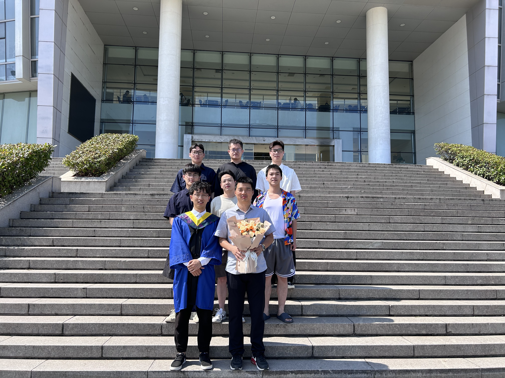

Advanced Control and Robotics Laboratory (ACRL)
Advanced Control and Robotics Laboratory (ACRL) is directed by Profs. Youwu Du, Bo Li, and Junjie Zhao at the School of Electrical and Information Engineering, Jiangsu University of Technology, Changzhou 213001, Jiangsu, China. We focus on control theory and its application, artificial intelligence, and robot control. Current research interests include disturbance estimation and rejection, event-triggered control, active disturbance rejection control, finite-time control, Markov system, and robotic control.
 |
|  |
 |
News
[2024.12]Prof. Du have participated in the Joint International Conference of the 5th AGILEHAND Plenary Meeting & 2024 IEEE/CAA Journal of Automatica Sinica Conference (APM&JAS 2024) as the local arrangement chair in Tokyo, Japan, held from 2 to 6 in December 2024.
[2024.10]Prof. Du published a paper entitled “Design of cascade equivalent-input-disturbance estimator for control system under high-frequency noise” in IEEE Transactions on Cybernetics.
[2024.08]Graduate student Tao Yang published a paper titled “An enhanced equivalent input disturbance approach to current control of PMSM with periodic and aperiodic disturbances" in Science China Information Sciences.
[2024.05]One of our research paper has been indexed as an ESI highly cited paper (IEEE Transactions on Industrial Electronics, 70(1), 855-865, 2023).
[2023.12]Prof. Du was awarded Leading Innovative Talent Introduction and Cultivation Program of Changzhou under Grant CQ20230079.
[2023.11]One of our research paper was awarded Second Prize of the Seventeenth Changzhou Outstanding Academic Papers in Natural Science.
[2023.10]Graduate student Jiahao Chen published a conference paper and the paper was awarded Best Paper Award in 2023 IEEE International Conference on Unmanned Systems.
[2023.06]Prof. Du was awarded the Jiangsu Goverment Scholarship to pursue study in Tokyo University of Technology, Japan, as a visiting scholar.
[2023.06]We have organized a special session at the 6th IEEE International Conference on Unmanned Systems.
[2023.06]Prof. Du was elevated to IEEE Senior Member.
[2023.05]We have organized a special session at the 6th IEEE International Conference on Industrial Cyber-Physical Systems.
[2023.05]Prof. Du published a paper entitled “Analysis and robust control of system with uncertainty and disturbance using equivalent-input-disturbance approach” in Journal of the Franklin Institute.
[2023.04]We have organized a special session at the 12th IEEE Data Driven Control and Learning Systems Conference.
[2023.03]Prof. Du published a paper entitled “Improving performance of disturbance rejection for nonlinear systems using improved equivalent-input-disturbance approach” in IEEE Transactions on Industrial Informatics.
[2022.12]Prof. Du was awarded Zhongwu Young Innovative Talent of Jiangsu University of Technology.
Contact
Address: Room 60-325, the School of Electrical and Information Engineering, Jiangsu University of Technology, 1801 Zhongwu Rd., Changzhou, Jiangsu, 213001 China.
E-mail: duyouwu@just.edu.cn, libonanjing@aliyun.com, junjiezhao2518@sina.com.